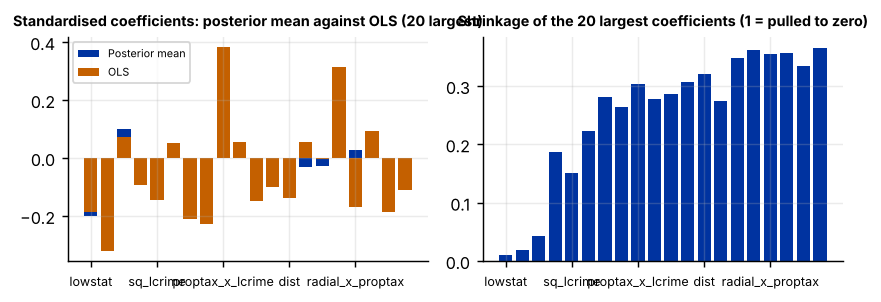

Run this model on your own data in Open Econometric Systems →
Step 1The question and the model
How much do neighbourhood characteristics affect house prices, when you allow every regressor to enter nonlinearly and to interact with the others? The hedonic price equation of Harrison and Rubinfeld (1978) has eight regressors: air pollution (lnox), rooms, distance to employment centres, access to highways, the property tax rate, the pupil-teacher ratio, the share of lower-status residents (lowstat) and crime. Adding their squares and all 28 pairwise products gives 44 regressors. With 506 tracts OLS handles this; with 120 it does not: the model has almost as many parameters as observations, the coefficients are noisy and the predictions are worse than those of the simple model.
A shrinkage prior is a prior on the coefficients that puts most of its mass near zero. With standardised regressors,
and the three priors differ in how \(\lambda_j\) (the scale of each coefficient) and \(\tau\) (the overall scale) are distributed:
| Prior | Scales | What it does |
|---|---|---|
| Horseshoe (Carvalho et al. 2010) | \(\lambda_j\) and \(\tau\) half-Cauchy | Shrinks small coefficients hard and leaves large ones nearly untouched: built for a few large effects among many noise terms |
| Bayesian lasso (Park and Casella 2008) | \(\lambda_j^2\) exponential: Laplace prior on \(\beta_j\) | Shrinks every coefficient by roughly the same amount towards zero |
| Ridge | \(\lambda_j = 1\): common scale, half-Cauchy \(\tau\) | Shrinks all coefficients by the same proportion: best when there are many small effects |
All three are sampled by Gibbs samplers whose conditional distributions are exact (Makalic and Schmidt 2016 for the horseshoe), and the regressors are standardised so that one prior suits every variable. The engine reports for each coefficient the posterior mean and interval, the probability that the effect is non-negligible (a one-standard-deviation change in the regressor moves the outcome by more than 5% of its standard deviation; you can change the 5%) and the shrinkage factor \(\kappa_j = 1/(1 + n\tau^2\lambda_j^2)\), which is 1 when the coefficient is pulled all the way to zero and 0 when the data are left alone (Piironen and Vehtari 2017).
Shrinkage is not selection
A coefficient that is shrunk is not set to zero. The posterior reports how much is left and how uncertain it is. If you need a list of variables, use the probability of a non-negligible effect or the interval, and say which rule you used; if you need a list of variables with a stated probability of belonging, use the model-averaging guide.
How to write it: the model
We estimate the hedonic price equation with 44 regressors (eight characteristics, their squares and all pairwise products, each standardised) on a random sample of 120 tracts, with a horseshoe prior on the coefficients (Carvalho et al. 2010): each coefficient has a normal prior with standard deviation \(\sigma\tau\lambda_j\), and \(\lambda_j\) and \(\tau\) have half-Cauchy priors. The error variance has the usual improper prior. We sample the posterior by Gibbs sampling with the scale-mixture representation of Makalic and Schmidt (2016), in two chains of 2,000 draws after 1,000 burn-in draws, and compare with the Bayesian lasso, a ridge prior and OLS.
Step 2Load the data
import numpy as np
import pandas as pd
import oes_engine as oes
df = pd.read_csv("hprice2_poly.csv")
x = [c for c in df.columns if c != "lprice"]
base = x[:8]
print(df.shape, "-> 8 regressors, 8 squares, 28 products:", len(x), "regressors")
train = df.sample(120, random_state=7)
test = df.drop(train.index)
data = train.to_csv(index=False)
print("training sample:", len(train), " test sample:", len(test))
print(train[base + ["lprice"]].describe().round(2).loc[["mean", "std"]].T)(506, 45) -> 8 regressors, 8 squares, 28 products: 44 regressors
training sample: 120 test sample: 386
mean std
lnox 0.11 1.04
rooms 0.04 0.93
dist 0.01 1.01
radial 0.16 1.05
proptax 0.14 1.04
stratio 0.11 0.99
lowstat -0.02 0.97
lcrime 0.11 1.03
lprice 9.92 0.39How to read it
The file has 506 tracts and 44 regressors already built: the eight characteristics, centred and divided by their standard deviations, their eight squares and the 28 products of pairs. In a random training sample of 120 tracts, the regressors have means near zero and standard deviations near one, as they should; log price has mean 9.92 and standard deviation 0.39. The other 386 tracts are held out to test the predictions in Step 8. Standardisation matters for shrinkage: a prior of one scale only treats all coefficients alike if the regressors have the same scale (the engine does this itself, and reports the coefficients in the original units).
Step 3Estimate
spec = dict(y="lprice", x=x)
r = oes.run("bayes_shrink", data, spec)
oes.summary(r)
oes.show(r, "Posterior of the coefficients", rows=12)
oes.plot(r)Observations: 120
Regressors: 44
Prior: horseshoe
In-sample R-squared: 0.884
Posterior mean of sigma: 0.15
Effective number of non-negligible coefficients: 20.25
Largest R-hat: 1.011
Smallest effective sample size: 280.0
Posterior of the coefficients (horseshoe prior)
Mean Std. dev. 2.5% 97.5% P(> 0) P(non-negligible) Interval excludes 0 Shrinkage
Variable
lowstat -0.2057 0.0370 -0.2786 -0.1348 0.000 1.000 yes 0.010
proptax_x_lowstat -0.1542 0.0465 -0.2573 -0.0659 0.001 0.997 yes 0.019
rooms 0.1093 0.0351 0.0385 0.1774 0.999 0.995 yes 0.043
rooms_x_radial -0.0681 0.0620 -0.2057 0.0129 0.122 0.733 no 0.187
sq_lcrime -0.0431 0.0346 -0.1190 0.0064 0.085 0.791 no 0.151
radial_x_stratio 0.0655 0.0644 -0.0227 0.2063 0.856 0.677 no 0.223
lcrime -0.0488 0.0636 -0.2076 0.0228 0.214 0.581 no 0.280
rooms_x_proptax -0.0432 0.0537 -0.1686 0.0258 0.218 0.585 no 0.263
proptax_x_lcrime 0.0416 0.0708 -0.0333 0.2344 0.719 0.513 no 0.303
proptax_x_stratio 0.0486 0.0557 -0.0256 0.1754 0.809 0.576 no 0.278
lnox_x_lcrime -0.0442 0.0522 -0.1715 0.0217 0.182 0.559 no 0.286
dist_x_radial -0.0454 0.0558 -0.1806 0.0252 0.197 0.540 no 0.306
Note: Sorted by the size of the standardised posterior mean. P(non-negligible) = posterior probability that a one-s.d. change in the regressor moves y by more than 0.05 of its s.d. Shrinkage = posterior mean of 1/(1 + n tau^2 lambda^2) (Piironen and Vehtari 2017): near 1 means the coefficient is pulled to zero, near 0 left alone.
How to read it
The model explains 88.4% of the variance of log price in the training sample, with a residual standard deviation of 0.150 (log points) against 0.39 for log price itself. The table lists the 12 coefficients with the largest standardised posterior means. Three stand out: the share of lower-status residents (\(-0.206\), 95% interval \(-0.279\) to \(-0.135\)), its interaction with the property tax (\(-0.154\), \(-0.257\) to \(-0.066\)) and the number of rooms (0.109, 0.038 to 0.177). A one-standard-deviation increase in the lower-status share lowers the price by about 21 log points, other things at their means. Their shrinkage factors are 0.010, 0.019 and 0.043, so the prior left them almost untouched. The next nine have shrinkage between 0.15 and 0.31, intervals that include zero, and posterior probabilities of a non-negligible effect between 0.51 and 0.79.
The first chart shows the 20 largest standardised coefficients, posterior mean against OLS (OLS is far larger for almost all of them), and the second their shrinkage, which rises from near 0 for the three clear effects to between 0.15 and 0.35 for the rest. The "expected number of non-negligible coefficients" in the summary (20.3) is the sum of the 44 probabilities; it is large because many coefficients have probabilities near one half, which means undecided, not present.
Step 4Which effects are real?
co = oes.frame(next(t for t in r["tables"] if t["title"].startswith("Posterior of the coefficients")))
print("intervals that exclude zero:", (co["Interval excludes 0"] == "yes").sum(), "of", len(co))
print("P(non-negligible) above 0.9:", (co["P(non-negligible)"].astype(float) > 0.9).sum())
print(co.loc[base, ["Mean", "2.5%", "97.5%", "P(non-negligible)", "Shrinkage"]])intervals that exclude zero: 3 of 44
P(non-negligible) above 0.9: 3
Mean 2.5% 97.5% P(non-negligible) Shrinkage
Variable
lnox -0.0211 -0.1113 0.0236 0.426 0.366
rooms 0.1093 0.0385 0.1774 0.995 0.043
dist -0.0338 -0.1386 0.0149 0.519 0.321
radial 0.0238 -0.0334 0.1532 0.425 0.357
proptax -0.0269 -0.1376 0.0249 0.473 0.349
stratio -0.0182 -0.0980 0.0341 0.431 0.358
lowstat -0.2057 -0.2786 -0.1348 1.000 0.010
lcrime -0.0488 -0.2076 0.0228 0.581 0.280How to read it
Three of the 44 intervals exclude zero, and the same three have a probability above 0.9 of being non-negligible. Look at the eight linear terms. Rooms (0.109) and the lower-status share (\(-0.206\)) are clear. The other six are undecided: pollution \(-0.021\) (interval \(-0.111\) to 0.024), distance \(-0.034\), highway access 0.024, property tax \(-0.027\), the pupil-teacher ratio \(-0.018\) and crime \(-0.049\), with probabilities of a non-negligible effect between 0.43 and 0.58 and shrinkage between 0.28 and 0.37. The data do not say these effects are zero; with 120 tracts they cannot tell. A paper should say "not distinguishable from zero in this sample", not "no effect". With all 506 tracts the picture would be sharper.
Step 5Compare with OLS
oes.show(r, "Ordinary least squares", rows=8)Ordinary least squares for comparison
OLS coef. OLS std. err. Posterior mean Ratio (posterior / OLS)
Variable
lnox -0.1054 0.0592 -0.0211 0.200
rooms 0.0807 0.0377 0.1093 1.355
dist -0.1354 0.0647 -0.0338 0.250
radial 0.0885 0.2641 0.0238 0.269
proptax -0.0036 0.3121 -0.0269 7.424
stratio 0.0015 0.1118 -0.0182 -12.514
lowstat -0.1908 0.0395 -0.2057 1.078
lcrime -0.2050 0.1183 -0.0488 0.238
Note: The ratio is the share of the OLS coefficient that survives the shrinkage.How to read it
With 44 regressors and 120 observations, OLS is unstable. The standard errors on highway access (0.264) and the property tax (0.312) are five to eight times the posterior standard deviations (0.047 and 0.041), and the coefficients are large and erratic: crime \(-0.205\) against a posterior mean of \(-0.049\), pollution \(-0.105\) against \(-0.021\), distance \(-0.135\) against \(-0.034\). The ratio column shows the share of the OLS coefficient that survives: about 0.2 to 0.27 for those four, so OLS overstates them by a factor of four or five, which is the overfitting that the prior corrects. The two clear effects are not shrunk much: the lower-status share (ratio 1.08) and rooms (1.36; the posterior is larger than OLS, because OLS splits the rooms effect over correlated interaction terms that the prior shrinks). Ignore the ratios for the property tax (7.4) and the pupil-teacher ratio (\(-12.5\)): the OLS coefficients are almost exactly zero (\(-0.004\) and 0.001), so a ratio is meaningless.
Step 6Check the sampler
oes.show(r, "MCMC convergence diagnostics")MCMC convergence diagnostics
R-hat Effective sample size Geweke z (chain 1)
Parameter
rooms_x_radial 1.009 280.0 -0.06
rooms_x_proptax 1.003 325.0 -0.77
rooms_x_lcrime 1.008 369.0 0.60
proptax_x_lcrime 1.006 381.0 0.26
lnox_x_lcrime 1.001 417.0 0.08
dist 1.002 420.0 -0.22
sq_lcrime 1.005 436.0 -0.31
lnox 1.002 438.0 -0.46
dist_x_radial 1.007 457.0 0.12
sigma^2 1.004 488.0 0.08
Note: The 10 parameters with the smallest effective sample size (of 45). R-hat above 1.05 or an effective sample size of a few dozen means the chains have not mixed; the horseshoe needs more draws than a normal prior.How to read it
The table lists the ten parameters with the smallest effective sample sizes out of 45. The worst is 280 (the interaction of rooms and highway access) out of 4,000 draws, and the largest R-hat in the whole run is 1.011, so the two chains agree. A few hundred effective draws are enough for means and standard deviations but rather few for the tails of a 95% interval: the horseshoe prior has heavy tails and mixes more slowly than a normal prior. For a paper, use 10,000 draws per chain, which takes a few seconds. If R-hat exceeded 1.05, or the effective sample size fell below about 100 for a parameter you report, increase draws and burn before trusting the intervals.
Step 7Robustness: the prior
oes.show(r, "Prior sensitivity")Prior sensitivity: posterior means of the 8 largest coefficients
lowstat proptax_x_lowstat rooms rooms_x_radial sq_lcrime radial_x_stratio lcrime rooms_x_proptax
Prior
horseshoe -0.2041 -0.1493 0.1107 -0.0700 -0.0399 0.0680 -0.0713 -0.0394
lasso -0.1889 -0.1359 0.1144 -0.0666 -0.0420 0.0769 -0.0646 -0.0445
ridge -0.1699 -0.1201 0.1178 -0.0756 -0.0459 0.0821 -0.0658 -0.0472
OLS -0.1908 -0.3236 0.0807 -0.0860 -0.0849 0.0670 -0.2050 -0.2120
Note: Each row is a separate run of 800 draws with the default hyperparameters. The ridge prior shrinks all coefficients by the same factor; the horseshoe and lasso shrink small ones more.How to read it
Each row re-estimates the model under a different prior, and the columns are the eight largest coefficients. The three leading terms keep their size and sign whatever the prior: the lower-status share is \(-0.204\) (horseshoe), \(-0.189\) (lasso) and \(-0.170\) (ridge), and rooms is 0.111, 0.114 and 0.118. The horseshoe leaves the large coefficient closest to its OLS value (\(-0.191\)), and ridge shrinks it most, as expected: ridge applies the same proportional shrinkage to everything. For the small coefficients the three priors agree and all disagree with OLS: crime is \(-0.071\), \(-0.065\) and \(-0.066\) against \(-0.205\) in OLS, and the property-tax interaction with crime and the others are halved or more. The conclusions about which effects matter do not depend on the prior; their size depends a little.
Step 8Diagnostics: does shrinkage predict better?
Estimate on 120 random tracts, predict the other 386, and repeat for ten random training samples. The measure is the root mean squared error of log price.
import statsmodels.api as sm
rows = []
for s in range(10):
tr = df.sample(120, random_state=100 + s); te = df.drop(tr.index); d_ = tr.to_csv(index=False); row = []
for pr in ("horseshoe", "lasso", "ridge"):
rr = oes.run("bayes_shrink", d_, dict(spec, prior=pr, draws=1000, burn=500))
b = oes.frame(next(t for t in rr["tables"] if t["title"].startswith("Posterior of the coefficients")))["Mean"].reindex(x).astype(float)
pred = tr["lprice"].mean() + (te[x] - tr[x].mean()).to_numpy() @ b.to_numpy()
row.append(np.sqrt(((te["lprice"] - pred) ** 2).mean()))
for cols in (x, base):
fit = sm.OLS(tr["lprice"], sm.add_constant(tr[cols])).fit()
row.append(np.sqrt(((te["lprice"] - fit.predict(sm.add_constant(te[cols], has_constant="add"))) ** 2).mean()))
row.append(np.sqrt(((te["lprice"] - tr["lprice"].mean()) ** 2).mean()))
rows.append(row)
out = pd.DataFrame(rows, columns=["Horseshoe", "Lasso", "Ridge", "OLS, 44", "OLS, 8 linear", "Mean only"])
print(out.mean().round(4))
print("horseshoe beats OLS (44):", (out["Horseshoe"] < out["OLS, 44"]).mean(), " lasso:", (out["Horseshoe"] < out["Lasso"]).mean(), " ridge:", (out["Horseshoe"] < out["Ridge"]).mean())Horseshoe 0.1831 Lasso 0.1798 Ridge 0.1804 OLS, 44 0.2179 OLS, 8 linear 0.2100 Mean only 0.4104 dtype: float64 horseshoe beats OLS (44): 1.0 lasso: 0.1 ridge: 0.2
How to read it
The three shrinkage priors predict about 15% better than OLS: root mean squared errors of 0.183 (horseshoe), 0.180 (lasso) and 0.180 (ridge), against 0.218 for OLS with all 44 regressors and 0.210 for OLS with only the eight linear terms. Using all 44 regressors without shrinkage is worse than using the eight (0.218 against 0.210): extra terms hurt when they are not shrunk, and help when they are. The horseshoe beats OLS in all ten samples. It does not beat the lasso or the ridge here (it wins 1 and 2 of ten): the signal in this problem is dense, with many small effects and only a few large ones, and the horseshoe's advantage is in sparse problems where nearly all coefficients are zero. Choose the prior from the structure you expect, and report the comparison.
Step 9Write the results
How to write it: results
Table 1 reports the posterior of the hedonic price equation with 44 regressors, estimated on 120 randomly drawn tracts with a horseshoe prior. Three terms are clearly different from zero: the share of lower-status residents (posterior mean \(-0.206\) per standard deviation, 95% credible interval \(-0.279\) to \(-0.135\)), its interaction with the property tax (\(-0.154\); \(-0.257\) to \(-0.066\)) and the number of rooms (0.109; 0.038 to 0.177). The other 41 coefficients have intervals that include zero and posterior probabilities of a non-negligible effect between 0.4 and 0.8, so the sample cannot tell whether they are zero. OLS on the same sample gives coefficients that are four to five times larger for pollution, distance, access and crime, with standard errors up to eight times larger. The chains converge (R-hat at most 1.011, smallest effective sample size 280). The three leading effects are the same under a Bayesian lasso and a ridge prior. In ten random splits, the shrinkage priors predict log prices of the 386 held-out tracts with a root mean squared error of 0.18 against 0.22 for OLS with all regressors and 0.21 for OLS with the linear terms only.
| Report | What | Where |
|---|---|---|
| Prior | Family, hyperpriors, standardisation, the negligible-effect rule | Step 1 |
| Results | Posterior mean, interval, probability of a non-negligible effect, shrinkage | Steps 3 and 4 |
| Comparison | OLS coefficients and standard errors on the same sample | Step 5 |
| Sampler | Chains, draws, R-hat, effective sample size | Step 6 |
| Robustness | The three priors side by side | Step 7 |
| Prediction | Out-of-sample root mean squared error over repeated splits | Step 8 |
References. Carvalho, Polson and Scott (2010), Biometrika; Makalic and Schmidt (2016), IEEE Signal Processing Letters; Park and Casella (2008), Journal of the American Statistical Association; Piironen and Vehtari (2017), Electronic Journal of Statistics; Bhadra, Datta, Polson and Willard (2019), Statistical Science; Harrison and Rubinfeld (1978), Journal of Environmental Economics and Management.